CODING AGENTS AS PIXEL WORLD MODELS
traex/GPT-5.6-Sol · common50_0005
点击播放 · 原生 RGB 像素
逐轮保存的候选
回放视频、检查图与代码变化。
每份候选均可单独播放。实际图片检查记录在下方工具轨迹中。
候选 01播放与检查图
点击播放 · 原生 RGB 像素
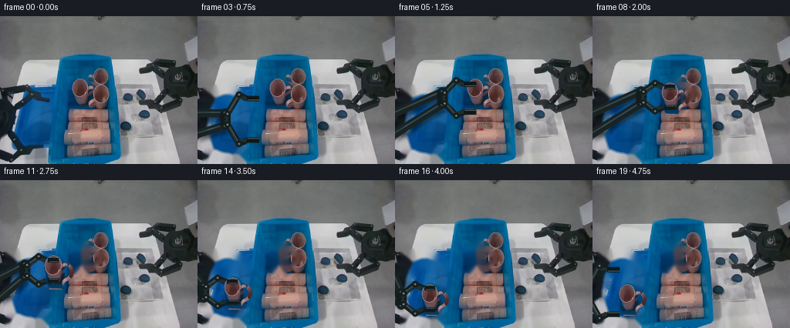
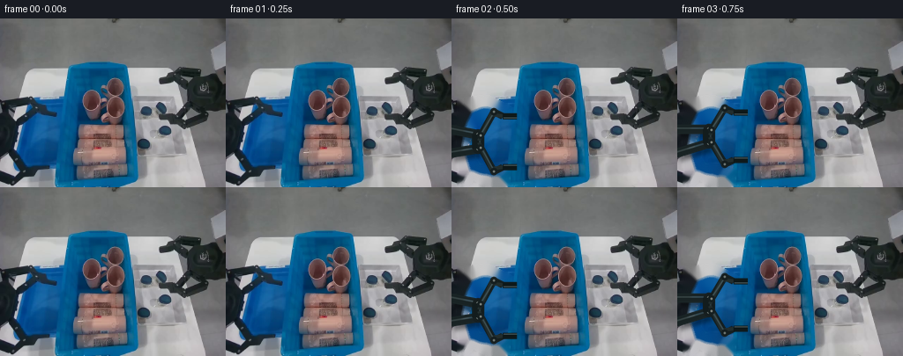
展开代码变化
--- 上一保存版本
+++ 本次保存版本
@@ -0,0 +1,280 @@
+from pathlib import Path
+
+import cv2
+import numpy as np
+from PIL import Image, ImageDraw, ImageFilter
+
+import artifact_io
+
+
+HERE = Path(__file__).resolve().parent
+W, H = 256, 192
+SS = 4
+
+
+def smooth(t):
+ t = max(0.0, min(1.0, float(t)))
+ return t * t * (3.0 - 2.0 * t)
+
+
+def lerp(a, b, t):
+ t = smooth(t)
+ return tuple(a[i] * (1.0 - t) + b[i] * t for i in range(len(a)))
+
+
+def make_clean_plates(src):
+ """Make conservative clean plates only where the moving objects exist."""
+ bgr = cv2.cvtColor(src, cv2.COLOR_RGB2BGR)
+
+ # Remove the original left gripper, while retaining its round off-screen base.
+ yy, xx = np.mgrid[:H, :W]
+ dark = np.max(src, axis=2) < 100
+ region = (xx >= 8) & (xx < 72) & (yy > 82)
+ arm_mask = (dark & region).astype(np.uint8) * 255
+ arm_mask = cv2.dilate(arm_mask, np.ones((5, 5), np.uint8), iterations=1)
+ # Include slim anti-aliased borders and linkage shadows.
+ extra = np.zeros((H, W), np.uint8)
+ cv2.fillPoly(extra, [np.array([(8, 91), (42, 87), (70, 101), (68, 118),
+ (39, 114), (18, 132), (8, 130)], np.int32)], 255)
+ cv2.fillPoly(extra, [np.array([(8, 156), (39, 169), (65, 170), (65, 190),
+ (39, 191), (8, 176)], np.int32)], 255)
+ arm_mask = cv2.max(arm_mask, extra)
+ # Preserve the cyan bin wall at the right edge of this region.
+ arm_mask[:, 69:] = 0
+ clean_arm = cv2.inpaint(bgr, arm_mask, 4, cv2.INPAINT_TELEA)
+
+ # Remove the front-left pink mug from the large bin. The mask follows the
+ # cup, rim, and handle and deliberately leaves the two other mugs intact.
+ mug_mask = np.zeros((H, W), np.uint8)
+ cv2.ellipse(mug_mask, (104, 91), (13, 14), 0, 0, 360, 255, -1)
+ cv2.fillPoly(mug_mask, [np.array([(93, 91), (116, 89), (117, 112),
+ (113, 122), (98, 121), (94, 112)], np.int32)], 255)
+ cv2.ellipse(mug_mask, (117, 101), (12, 10), 0, 0, 360, 255, 4)
+ mug_mask = cv2.dilate(mug_mask, np.ones((3, 3), np.uint8), iterations=1)
+ clean_both = cv2.inpaint(clean_arm, mug_mask, 5, cv2.INPAINT_TELEA)
+ return (cv2.cvtColor(clean_arm, cv2.COLOR_BGR2RGB),
+ cv2.cvtColor(clean_both, cv2.COLOR_BGR2RGB), mug_mask)
+
+
+def make_mug_sprite(src):
+ """Cut the requested pink mug from frame zero with a softly antialiased mask."""
+ x0, y0, x1, y1 = 89, 76, 130, 125
+ crop = src[y0:y1, x0:x1].copy()
+ a = Image.new("L", (x1 - x0, y1 - y0), 0)
+ d = ImageDraw.Draw(a)
+ # Handle is behind the body.
+ d.ellipse((16, 13, 39, 36), fill=255)
+ d.ellipse((21, 17, 34, 31), fill=0)
+ d.polygon([(5, 15), (27, 13), (28, 37), (24, 46), (10, 45), (6, 36)], fill=255)
+ d.ellipse((4, 4, 28, 31), fill=255)
+ a = a.filter(ImageFilter.GaussianBlur(0.55))
+ rgba = Image.fromarray(crop).convert("RGBA")
+ rgba.putalpha(a)
+ # Anchor is the top-opening center (104, 91) in source coordinates.
+ return rgba, (104 - x0, 91 - y0)
+
+
+def S(p):
+ return tuple(int(round(v * SS)) for v in p)
+
+
+def line(draw, points, fill, width, joint="curve"):
+ draw.line([S(p) for p in points], fill=fill, width=max(1, int(width * SS)), joint=joint)
+
+
+def circle(draw, p, r, fill, outline=None, width=1):
+ x, y = S(p)
+ rr = int(r * SS)
+ draw.ellipse((x - rr, y - rr, x + rr, y + rr), fill=fill,
+ outline=outline, width=max(1, int(width * SS)))
+
+
+def draw_arm_layer(tool_center, aperture, opacity=1.0):
+ """Render one coherent, rigid, two-jaw left robotic gripper."""
+ cx, cy = tool_center
+ layer = Image.new("RGBA", (W * SS, H * SS), (0, 0, 0, 0))
+ d = ImageDraw.Draw(layer)
+
+ # The wrist follows the tool; the shoulder remains attached just off-screen.
+ wrist = (cx - 37, cy)
+ shoulder = (-4, 139)
+ upper_root, lower_root = (-1, 126), (-1, 153)
+ wu, wl = (wrist[0], wrist[1] - 8), (wrist[0], wrist[1] + 8)
+
+ # Soft cast shadow gives a consistent height cue without moving the scene.
+ shadow = Image.new("RGBA", layer.size, (0, 0, 0, 0))
+ sd = ImageDraw.Draw(shadow)
+ for p0, p1, wid in [(upper_root, wu, 10), (lower_root, wl, 10)]:
+ line(sd, [(p0[0] + 3, p0[1] + 5), (p1[0] + 3, p1[1] + 5)],
+ (0, 0, 0, 105), wid)
+ shadow = shadow.filter(ImageFilter.GaussianBlur(2.3 * SS))
+ layer.alpha_composite(shadow)
+ d = ImageDraw.Draw(layer)
+
+ # Parallel rigid forearm links.
+ for p0, p1 in [(upper_root, wu), (lower_root, wl)]:
+ line(d, [p0, p1], (25, 35, 36, 255), 11)
+ line(d, [(p0[0], p0[1] - 1.2), (p1[0], p1[1] - 1.2)],
+ (57, 69, 69, 220), 2.0)
+ circle(d, p1, 6.0, (23, 31, 32, 255))
+ circle(d, p1, 2.0, (107, 116, 113, 255))
+
+ # Wrist bridge / palm.
+ line(d, [wu, wl], (19, 28, 29, 255), 14)
+ line(d, [(wrist[0] + 2, wrist[1] - 8), (wrist[0] + 2, wrist[1] + 8)],
+ (55, 66, 65, 230), 2)
+
+ # Symmetric four-bar fingers. Aperture is the jaw-pad half-separation.
+ pads = []
+ for sign in (-1, 1):
+ base = (wrist[0] + 3, wrist[1] + sign * 7)
+ knuckle = (wrist[0] + 18, wrist[1] + sign * (aperture + 5))
+ pad0 = (cx - 9, cy + sign * aperture)
+ pad1 = (cx + 7, cy + sign * aperture)
+ # Main bent phalanx and stabilizing link make the mechanism look actuated.
+ line(d, [base, knuckle, pad0], (20, 30, 31, 255), 8)
+ line(d, [(wrist[0] + 1, wrist[1] + sign * 1),
+ (knuckle[0] - 3, knuckle[1] - sign * 3), pad0],
+ (34, 45, 45, 255), 4.3)
+ line(d, [(base[0], base[1] - 1), (knuckle[0], knuckle[1] - 1 * sign)],
+ (64, 76, 74, 230), 1.5)
+ circle(d, base, 4.0, (22, 31, 32, 255))
+ circle(d, base, 1.45, (119, 126, 120, 255))
+ circle(d, knuckle, 4.3, (22, 31, 32, 255))
+ circle(d, knuckle, 1.45, (105, 114, 110, 255))
+ pads.append((pad0, pad1, sign))
+
+ # Jaw pads are compact and parallel, so grasp width is visually unambiguous.
+ for pad0, pad1, sign in pads:
+ line(d, [pad0, pad1], (14, 24, 25, 255), 7)
+ line(d, [(pad0[0] + 1, pad0[1] - sign * 2),
+ (pad1[0], pad1[1] - sign * 2)], (72, 81, 78, 230), 1.3)
+
+ if opacity < 0.999:
+ aa = np.array(layer)
+ aa[:, :, 3] = np.clip(aa[:, :, 3].astype(np.float32) * opacity, 0, 255).astype(np.uint8)
+ layer = Image.fromarray(aa)
+ return layer.resize((W, H), Image.Resampling.LANCZOS)
+
+
+def add_mug(frame, sprite, anchor, top_center, scale, lift):
+ """Composite the rigid source mug and a physically plausible cast shadow."""
+ base = Image.fromarray(frame).convert("RGBA")
+ cx, cy = top_center
+ # Shadow contracts and softens as the mug is lifted.
+ shadow = Image.new("RGBA", (W, H), (0, 0, 0, 0))
+ sd = ImageDraw.Draw(shadow)
+ rx, ry = 12 * scale, 17 * scale
+ offx, offy = 3 + 3 * lift, 8 + 5 * lift
+ sd.ellipse((cx - rx + offx, cy - 3 + offy,
+ cx + rx + offx, cy + 28 * scale + offy),
+ fill=(12, 20, 22, int(70 - 25 * lift)))
+ shadow = shadow.filter(ImageFilter.GaussianBlur(2.0 + 2.4 * lift))
+ base.alpha_composite(shadow)
+
+ sw = max(1, int(round(sprite.width * scale)))
+ sh = max(1, int(round(sprite.height * scale)))
+ sp = sprite.resize((sw, sh), Image.Resampling.LANCZOS)
+ ax, ay = anchor
+ pos = (int(round(cx - ax * scale)), int(round(cy - ay * scale)))
+ base.alpha_composite(sp, pos)
+ return np.asarray(base.convert("RGB"), dtype=np.uint8)
+
+
+def arm_state(i):
+ # Return tool center and aperture. Frame 0/1 are untouched establishing shots.
+ if i <= 1:
+ return (66.0, 140.0), 29.0
+ if i <= 6:
+ t = (i - 2) / 4.0
+ return lerp((67.0, 140.0), (104.0, 100.0), t), 29.0 + (16.0 - 29.0) * smooth(t)
+ if i == 7:
+ return (104.0, 100.0), 13.2
+ # During carrying, the tool stays exactly nine pixels below the mug rim center.
+ if i <= 15:
+ key = {
+ 8: (100, 96), 9: (91, 95), 10: (80, 100), 11: (69, 108),
+ 12: (58, 117), 13: (49, 127), 14: (45, 136), 15: (45, 145),
+ }[i]
+ return (float(key[0]), float(key[1] + 9)), 13.2
+ if i == 16:
+ return (45.0, 154.0), 14.0
+ if i == 17:
+ return (45.0, 154.0), 23.0
+ if i == 18:
+ return (37.0, 151.0), 28.0
+ return (28.0, 145.0), 29.0
+
+
+def mug_state(i):
+ if i < 8:
+ return None
+ key = {
+ 8: (100, 96, 1.025, .35), 9: (91, 95, 1.06, .75),
+ 10: (80, 100, 1.075, 1.0), 11: (69, 108, 1.075, 1.0),
+ 12: (58, 117, 1.07, .9), 13: (49, 127, 1.055, .72),
+ 14: (45, 136, 1.025, .35), 15: (45, 145, 1.0, .08),
+ 16: (45, 145, 1.0, 0.0), 17: (45, 145, 1.0, 0.0),
+ 18: (45, 145, 1.0, 0.0), 19: (45, 145, 1.0, 0.0),
+ }
+ return key[i]
+
+
+def main():
+ src = np.asarray(Image.open(HERE / "first_frame.png").convert("RGB"), dtype=np.uint8)
+ clean_arm, clean_both, _ = make_clean_plates(src)
+ mug, anchor = make_mug_sprite(src)
+
+ frames = []
+ for i in range(20):
+ if i <= 1:
+ # The contract requires frame zero to be exact; one held frame also
+ # provides a calm establishing shot before purposeful motion.
+ frames.append(src.copy())
+ continue
+
+ bg = clean_both.copy() if i >= 8 else clean_arm.copy()
+ tool, aperture = arm_state(i)
+ arm = draw_arm_layer(tool, aperture)
+
+ # Draw the articulated arm first. The held mug overlays its central links,
+ # while the parallel pads remain visibly braced immediately above/below it.
+ canvas = Image.fromarray(bg).convert("RGBA")
+ canvas.alpha_composite(arm)
+ frame = np.asarray(canvas.convert("RGB"), dtype=np.uint8)
+ ms = mug_state(i)
+ if ms is not None:
+ mx, my, sc, lift = ms
+ frame = add_mug(frame, mug, anchor, (mx, my), sc, lift)
+
+ # Repaint the two small contact pads in front at grasp time, giving
+ # correct near-side occlusion and a secure, non-floating grasp.
+ if i <= 16:
+ overlay = Image.new("RGBA", (W * SS, H * SS), (0, 0, 0, 0))
+ od = ImageDraw.Draw(overlay)
+ _, ap = arm_state(i)
+ for sign in (-1, 1):
+ y = tool[1] + sign * ap
+ line(od, [(tool[0] - 7, y), (tool[0] + 7, y)], (16, 25, 26, 255), 6.0)
+ line(od, [(tool[0] - 5, y - sign * 1.7), (tool[0] + 6, y - sign * 1.7)],
+ (78, 86, 82, 220), 1.1)
+ overlay = overlay.resize((W, H), Image.Resampling.LANCZOS)
+ out = Image.fromarray(frame).convert("RGBA")
+ out.alpha_composite(overlay)
+ frame = np.asarray(out.convert("RGB"), dtype=np.uint8)
+
+ frames.append(frame)
+
+ frames = np.stack(frames).astype(np.uint8)
+ assert np.array_equal(frames[0], src)
+ artifact_io.save(frames, HERE)
+
+ # An animated local diagnostic is useful for inspection and is not consumed
+ # by the scorer; the canonical submission remains artifact_io's RGB arrays.
+ ims = [Image.fromarray(f) for f in frames]
+ ims[0].save(HERE / "preview.gif", save_all=True, append_images=ims[1:],
+ duration=250, loop=0, optimize=False)
+
+
+if __name__ == "__main__":
+ main()
候选 02播放与检查图
点击播放 · 原生 RGB 像素
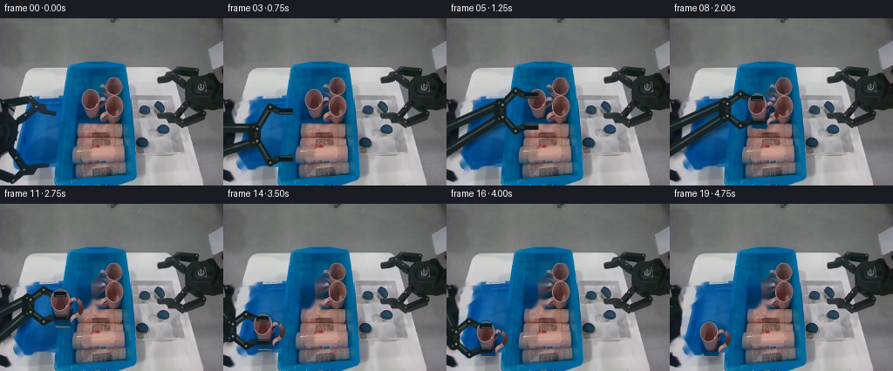
展开代码变化
--- 上一保存版本
+++ 本次保存版本
@@ -28,30 +28,22 @@
# Remove the original left gripper, while retaining its round off-screen base.
yy, xx = np.mgrid[:H, :W]
- dark = np.max(src, axis=2) < 100
+ dark = np.max(src, axis=2) < 112
region = (xx >= 8) & (xx < 72) & (yy > 82)
arm_mask = (dark & region).astype(np.uint8) * 255
- arm_mask = cv2.dilate(arm_mask, np.ones((5, 5), np.uint8), iterations=1)
- # Include slim anti-aliased borders and linkage shadows.
- extra = np.zeros((H, W), np.uint8)
- cv2.fillPoly(extra, [np.array([(8, 91), (42, 87), (70, 101), (68, 118),
- (39, 114), (18, 132), (8, 130)], np.int32)], 255)
- cv2.fillPoly(extra, [np.array([(8, 156), (39, 169), (65, 170), (65, 190),
- (39, 191), (8, 176)], np.int32)], 255)
- arm_mask = cv2.max(arm_mask, extra)
+ arm_mask = cv2.dilate(arm_mask, np.ones((3, 3), np.uint8), iterations=1)
# Preserve the cyan bin wall at the right edge of this region.
arm_mask[:, 69:] = 0
- clean_arm = cv2.inpaint(bgr, arm_mask, 4, cv2.INPAINT_TELEA)
+ clean_arm = cv2.inpaint(bgr, arm_mask, 3, cv2.INPAINT_NS)
# Remove the front-left pink mug from the large bin. The mask follows the
# cup, rim, and handle and deliberately leaves the two other mugs intact.
mug_mask = np.zeros((H, W), np.uint8)
- cv2.ellipse(mug_mask, (104, 91), (13, 14), 0, 0, 360, 255, -1)
- cv2.fillPoly(mug_mask, [np.array([(93, 91), (116, 89), (117, 112),
- (113, 122), (98, 121), (94, 112)], np.int32)], 255)
- cv2.ellipse(mug_mask, (117, 101), (12, 10), 0, 0, 360, 255, 4)
+ cv2.ellipse(mug_mask, (104, 91), (12, 13), 0, 0, 360, 255, -1)
+ cv2.fillPoly(mug_mask, [np.array([(94, 91), (115, 89), (115, 111),
+ (112, 121), (99, 121), (95, 111)], np.int32)], 255)
mug_mask = cv2.dilate(mug_mask, np.ones((3, 3), np.uint8), iterations=1)
- clean_both = cv2.inpaint(clean_arm, mug_mask, 5, cv2.INPAINT_TELEA)
+ clean_both = cv2.inpaint(clean_arm, mug_mask, 3, cv2.INPAINT_NS)
return (cv2.cvtColor(clean_arm, cv2.COLOR_BGR2RGB),
cv2.cvtColor(clean_both, cv2.COLOR_BGR2RGB), mug_mask)
@@ -202,8 +194,8 @@
if i == 17:
return (45.0, 154.0), 23.0
if i == 18:
- return (37.0, 151.0), 28.0
- return (28.0, 145.0), 29.0
+ return (25.0, 151.0), 28.0
+ return (-4.0, 145.0), 29.0
def mug_state(i):
候选 03播放与检查图
点击播放 · 原生 RGB 像素
展开代码变化
--- 上一保存版本
+++ 本次保存版本
@@ -43,7 +43,17 @@
cv2.fillPoly(mug_mask, [np.array([(94, 91), (115, 89), (115, 111),
(112, 121), (99, 121), (95, 111)], np.int32)], 255)
mug_mask = cv2.dilate(mug_mask, np.ones((3, 3), np.uint8), iterations=1)
- clean_both = cv2.inpaint(clean_arm, mug_mask, 3, cv2.INPAINT_NS)
+ # Generic inpainting pulls pink from the tightly packed neighboring mugs.
+ # Instead, extend unobstructed cyan-bin texture from the left across the
+ # footprint, with a feathered edge. This models the exposed bin floor.
+ synth = clean_arm.copy()
+ ys, xs = np.nonzero(mug_mask)
+ for y, x in zip(ys, xs):
+ # A narrow, object-free stripe at x=80..88 has matching illumination.
+ sx = int(np.clip(80 + (x - 94) * 0.34, 80, 88))
+ synth[y, x] = clean_arm[y, sx]
+ alpha = cv2.GaussianBlur(mug_mask, (0, 0), 1.15).astype(np.float32)[..., None] / 255.0
+ clean_both = np.clip(clean_arm * (1.0 - alpha) + synth * alpha, 0, 255).astype(np.uint8)
return (cv2.cvtColor(clean_arm, cv2.COLOR_BGR2RGB),
cv2.cvtColor(clean_both, cv2.COLOR_BGR2RGB), mug_mask)
@@ -54,9 +64,8 @@
crop = src[y0:y1, x0:x1].copy()
a = Image.new("L", (x1 - x0, y1 - y0), 0)
d = ImageDraw.Draw(a)
- # Handle is behind the body.
- d.ellipse((16, 13, 39, 36), fill=255)
- d.ellipse((21, 17, 34, 31), fill=0)
+ # Only the cup body is sampled. Its handle is reconstructed as a clean,
+ # rigid loop during compositing because other mugs occlude it in frame zero.
d.polygon([(5, 15), (27, 13), (28, 37), (24, 46), (10, 45), (6, 36)], fill=255)
d.ellipse((4, 4, 28, 31), fill=255)
a = a.filter(ImageFilter.GaussianBlur(0.55))
@@ -163,6 +172,21 @@
fill=(12, 20, 22, int(70 - 25 * lift)))
shadow = shadow.filter(ImageFilter.GaussianBlur(2.0 + 2.4 * lift))
base.alpha_composite(shadow)
+
+ # Handle behind the cup body, matched to the source mug's muted pink.
+ handle = Image.new("RGBA", (W * SS, H * SS), (0, 0, 0, 0))
+ hd = ImageDraw.Draw(handle)
+ x0 = int((cx + 6 * scale) * SS)
+ y0 = int((cy + 4 * scale) * SS)
+ x1 = int((cx + 25 * scale) * SS)
+ y1 = int((cy + 28 * scale) * SS)
+ hd.ellipse((x0, y0, x1, y1), outline=(178, 119, 111, 255),
+ width=max(2, int(5.0 * scale * SS)))
+ # A restrained highlight follows the upper/outer curve.
+ hd.arc((x0 + SS, y0 + SS, x1 - SS, y1 - SS), 285, 65,
+ fill=(213, 156, 145, 220), width=max(1, int(1.2 * scale * SS)))
+ handle = handle.resize((W, H), Image.Resampling.LANCZOS)
+ base.alpha_composite(handle)
sw = max(1, int(round(sprite.width * scale)))
sh = max(1, int(round(sprite.height * scale)))
可观测工具轨迹
实际执行的命令与返回图片。
命令 1exit 0
/bin/bash -lc "cat GENERATION_RULES.md && printf '\\n--- PROMPT ---\\n' && cat prompt.txt"
命令 2exit 0
/bin/bash -lc "find . -maxdepth 2 -type f -printf '%p\\n' | sort && printf '\\n--- BINARIES ---\\n' && command -v ffmpeg || true && command -v python3 || true"
命令 3exit 0
/bin/bash -lc "cat task_spec.json && printf '\\n--- artifact API ---\\n' && sed -n '1,240p' artifact_io.py"
命令 4exit 0
/bin/bash -lc "python3 - <<'PY'
from PIL import Image
im=Image.open('first_frame.png')
print(im.mode, im.size)
# crops relevant left arm, mugs/bin and tray enlarged
for name,box in [('scene',(0,0,256,192)),('left',(0,75,105,192)),('bin',(65,45,155,190)),('mugs',(88,65,143,136))]:
im.crop(box).resize(((box[2]-box[0])*4,(box[3]-box[1])*4)).save(name+'_crop.png')
PY"命令 5exit 0
/bin/bash -lc "python3 - <<'PY' mods=['cv2','scipy','imageio'] for m in mods: try: q=__import__(m);print(m,'yes',getattr(q,'__version__','')) except Exception as e:print(m,'no') PY"
命令 6exit 0
/bin/bash -lc "python3 generate.py && python3 - <<'PY'
import numpy as np
from PIL import Image
z=np.load('pixels.npz')['pixels']
print('pixels',z.shape,z.dtype)
a=np.array(Image.open('first_frame.png'))
b=np.array(Image.open('frames/00.png'))
print('frame00 exact',np.array_equal(a,b),'maxdiff',np.abs(a.astype(int)-b.astype(int)).max())
print('files',len(list(__import__('pathlib').Path('frames').glob('*.png'))))
PY"命令 7exit 0
/bin/bash -lc "python3 - <<'PY'
from PIL import Image
import numpy as np
im=np.array(Image.open('first_frame.png'))
pts=[(5,80),(15,80),(30,80),(60,80),(10,95),(30,95),(60,95),(68,95),(15,110),(35,120),(50,130),(55,150),(15,175),(50,180),(68,180),(95,75),(90,110),(105,125),(120,70),(145,100)]
for x,y in pts: print((x,y),im[y,x].tolist())
PY"命令 8exit 0
/bin/bash -lc 'python3 generate.py'
命令 9exit 0
/bin/bash -lc "python3 - <<'PY'
from PIL import Image
for i in [0,2,5,8,11,14,17,19]:
im=Image.open(f'frames/{i:02d}.png')
im.crop((0,65,145,192)).resize((580,508)).save(f'crop_{i:02d}.png')
PY"命令 10exit 0
/bin/bash -lc "python3 generate.py && python3 - <<'PY'
from PIL import Image
for i in [8,11,14,17,19]:
im=Image.open(f'frames/{i:02d}.png')
im.crop((0,65,145,192)).resize((580,508)).save(f'crop_{i:02d}.png')
PY"命令 11exit 0
/bin/bash -lc "python3 - <<'PY' from PIL import Image import numpy as np for f in ['first_frame.png','frames/11.png']: a=np.array(Image.open(f)); print(f) for y in [75,80,85,90,95,100,105,110,115,120,125]: print(y, [a[y,x].tolist() for x in [82,86,90,94,98,102,106,110,114,118,122]]) PY"
命令 12exit 0
/bin/bash -lc "python3 -m py_compile generate.py && python3 generate.py && python3 - <<'PY'
from pathlib import Path
from PIL import Image
import numpy as np
src=np.array(Image.open('first_frame.png').convert('RGB'))
fs=np.stack([np.array(Image.open(f'frames/{i:02d}.png').convert('RGB')) for i in range(20)])
z=np.load('pixels.npz')['pixels']
dec=np.stack([((z[:,:,i,None] >> np.array([16,8,0])) & 255).astype(np.uint8) for i in range(20)])
print('frames:', fs.shape, fs.dtype)
print('frame00_pixel_identical:', np.array_equal(fs[0],src))
print('npz_roundtrip_identical:', np.array_equal(fs,dec))
print('right_static_region_maxdiff:', np.abs(fs[:,:,150:].astype(int)-src[:,150:].astype(int)).max())
print('adjacent_frame_changed_pixels:', [int(np.any(fs[i]"'!=fs[i-1],axis=2).sum()) for i in range(1,20)])
print('"'outputs:', {p.name:p.stat().st_size for p in [Path('pixels.npz'),Path('index.html'),Path('inspection.png')]})
PY"视觉工具实际返回图片 1
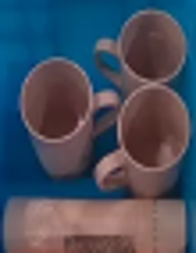
视觉工具实际返回图片 2
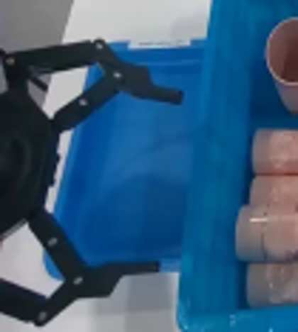
视觉工具实际返回图片 3

视觉工具实际返回图片 4

视觉工具实际返回图片 5
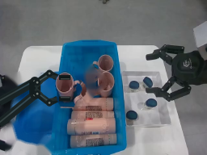
视觉工具实际返回图片 6
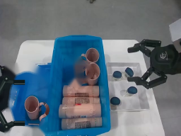
视觉工具实际返回图片 7

视觉工具实际返回图片 8
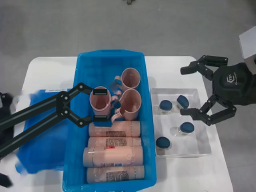
视觉工具实际返回图片 9
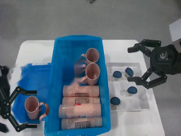
视觉工具实际返回图片 10
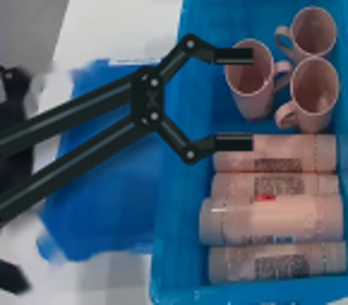
视觉工具实际返回图片 11
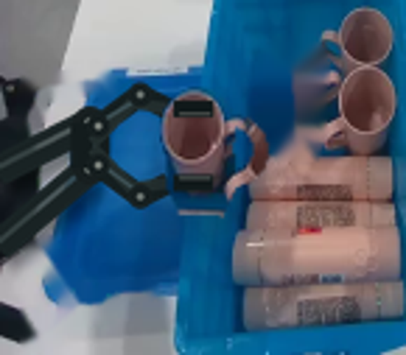
视觉工具实际返回图片 12
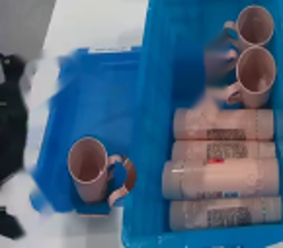
视觉工具实际返回图片 13
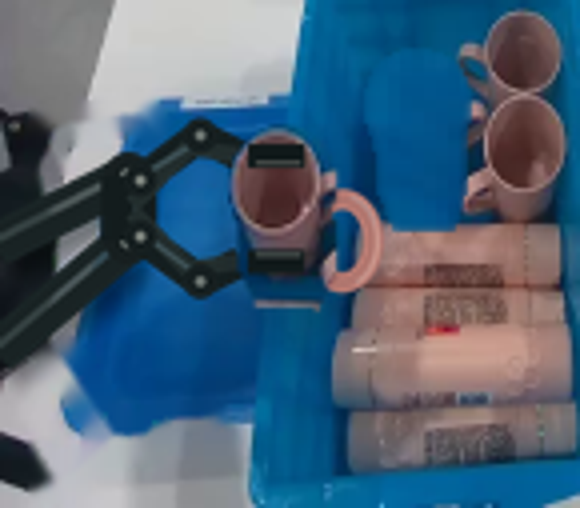
视觉工具实际返回图片 14
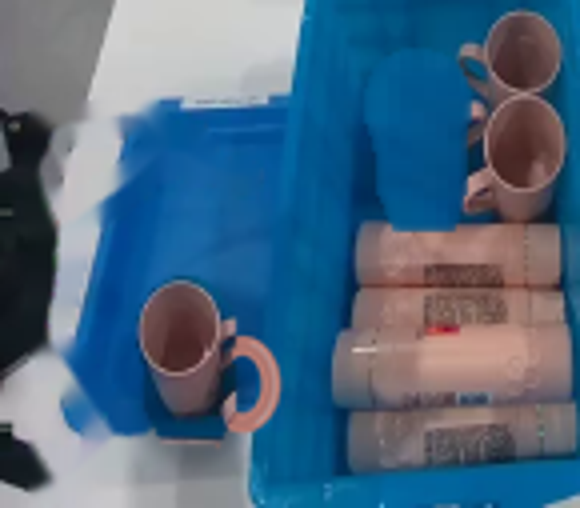
视觉工具实际返回图片 15
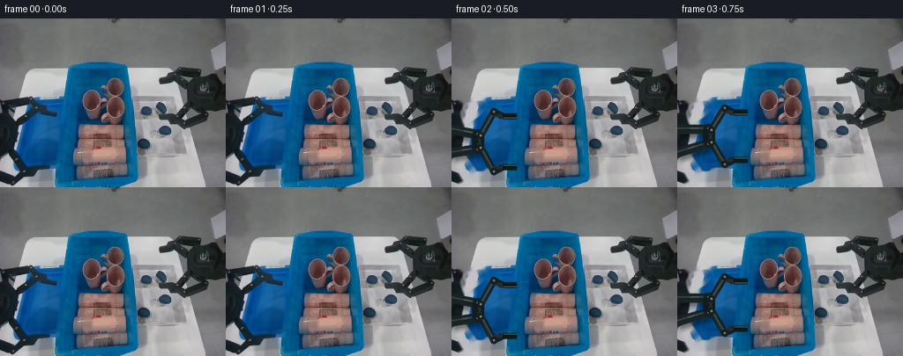
保存候选 3 份；完成命令 12 次；可验证图片返回 15 张。原始 API 响应与完整日志保留在本地。